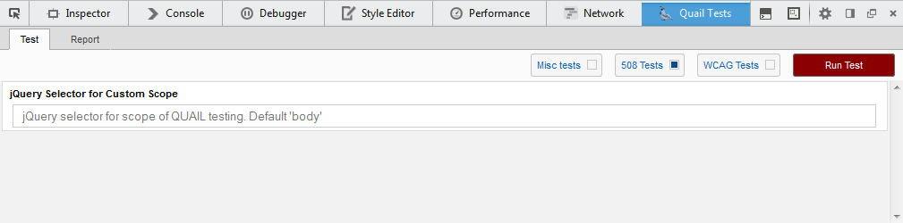

Quail Tests Panel Help
Getting Started
To begin using the plugin hit Ctrl Shift I to open the console tool box and look for the "Quail Tests" tab.
Or, if you prefer, right click anywhere on a web page and hit "Inspect Element".
Begin Testing
Within the "Quail Tests" tab, make sure the "Test" tab is displayed.
Select at least one of the groups of standard you wish to test, e.g. WCAG Tests.
Custom Test Scope
If you want to run the test only on a certain part of the web page, simply enter the jquery location into the Custom Scope input to limit the scope of the test.

Once you have selected which standards you wish to test with and the scope of the test, simply click the red Run Test button.
Doing so will begin the testing and the loading icon will appear.
Test Results
After the testing is complete the "Report" tab will be opened automatically. From this tab you can explore the results of the test.
The total number of fails that occured will be listed in the top left, with the severity totals listed to the right. Use this to quickly judge the outcome of the test.
You can also generate a more detailed version of this report using the Generate Report button.
Each result entity lists the relevant standard, a description of criteria, a highlight button, and an inspect button. Use these results to fix the accessibility problems your webpage may have.
Use the Highlight button to have all the elements that failed highlighted on the page. If there is an element that is unable to be highlighted for some reason the plugin will alert you.
Should you want to look more closely at the elements that failed to meet a criteria, click the Inspect button.
This will bring up a new tab that has the each element listed out as it's dom hierarchy (e.g. body > .class > div#id > p) sorted by the specific test failed.
This allows you to determine the exact location in the DOM where the tests have deemed the web page un-accessible.
You can also click the View HTML button to view a snippet of the HTML for that node.